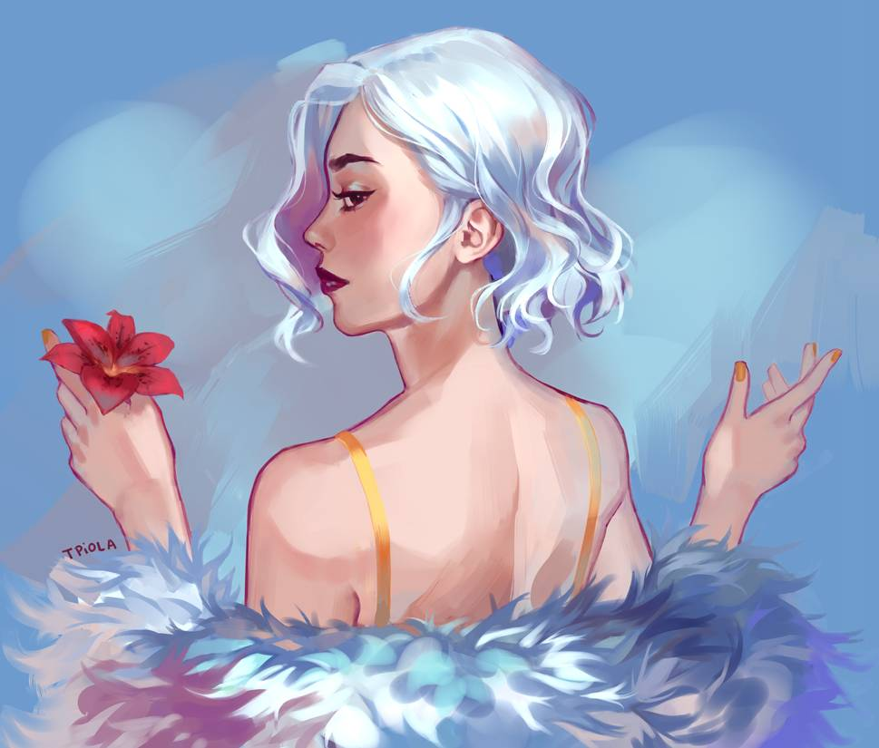
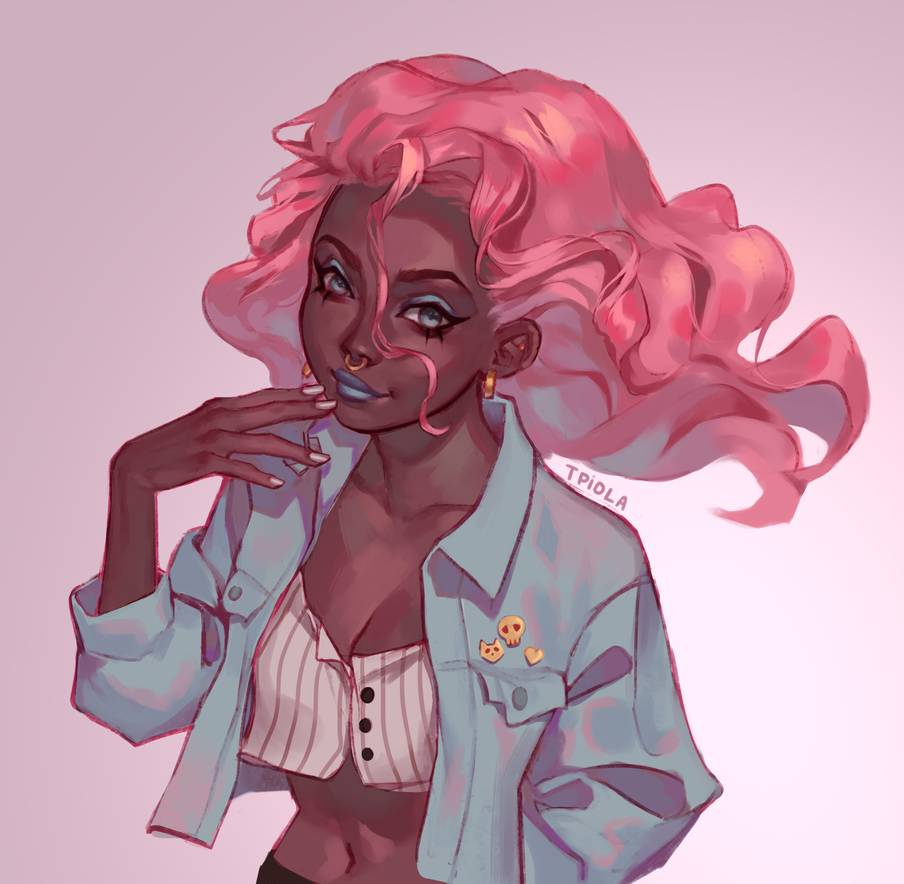
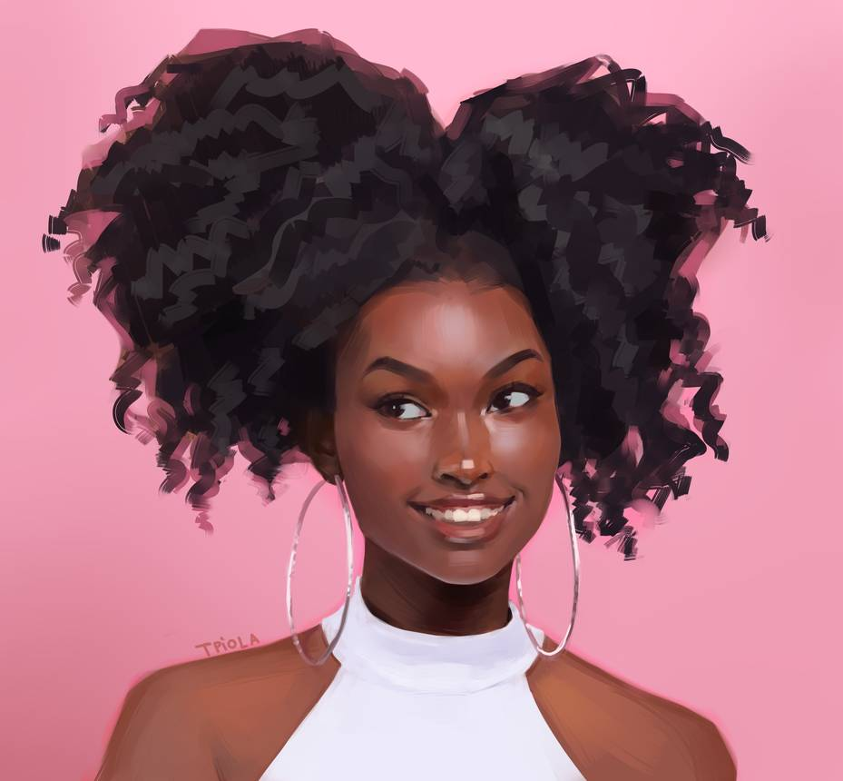

Blue Tarantula
A blue tarantula with a red head beauty. Looking up reference photos of spider was interesting to say the least.
American Star
Drawing superheroes are always a favorite to do. Originally there was not cape on this character, but I like it a lot better with one.

Lily
Blue is one of my favorite colors to paint with. I love how calm this piece looks. I thought that I would take inspiration from the 1920's.

Devorah
I drew this to celebrate 10k on instagram. Devorah is one of my favorite original characters that I have made in a while.
Starry Mermaid
Drawing mermaids during May has become a staple for the art community and so here is my contribution!

Cassady
I really love this piece. She was a part of a drawing challenge on instagram and I am really glad that I was able to make this.

Pink
This was a part of a photo study series that I did a while back. I love how the color pink highlights the subject perfectly.